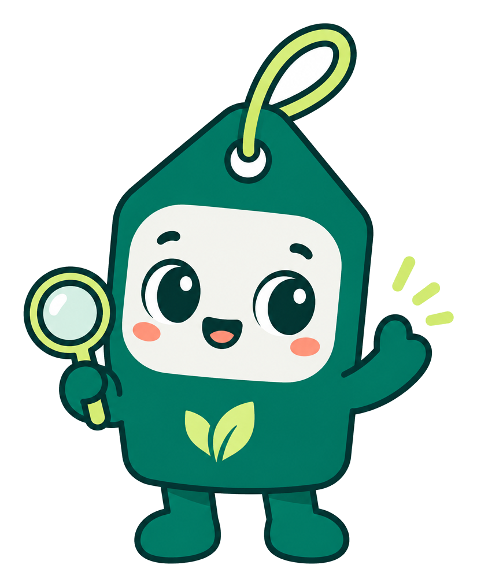
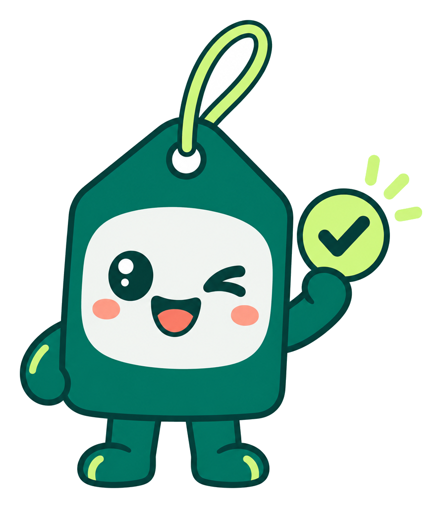
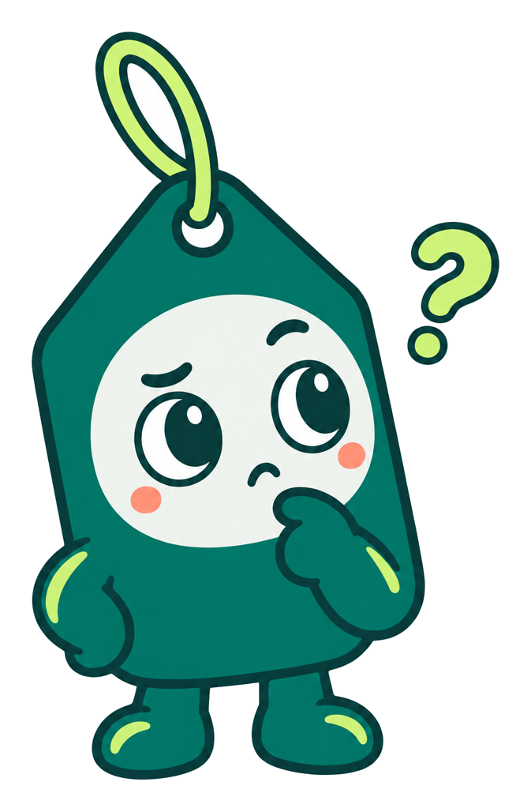
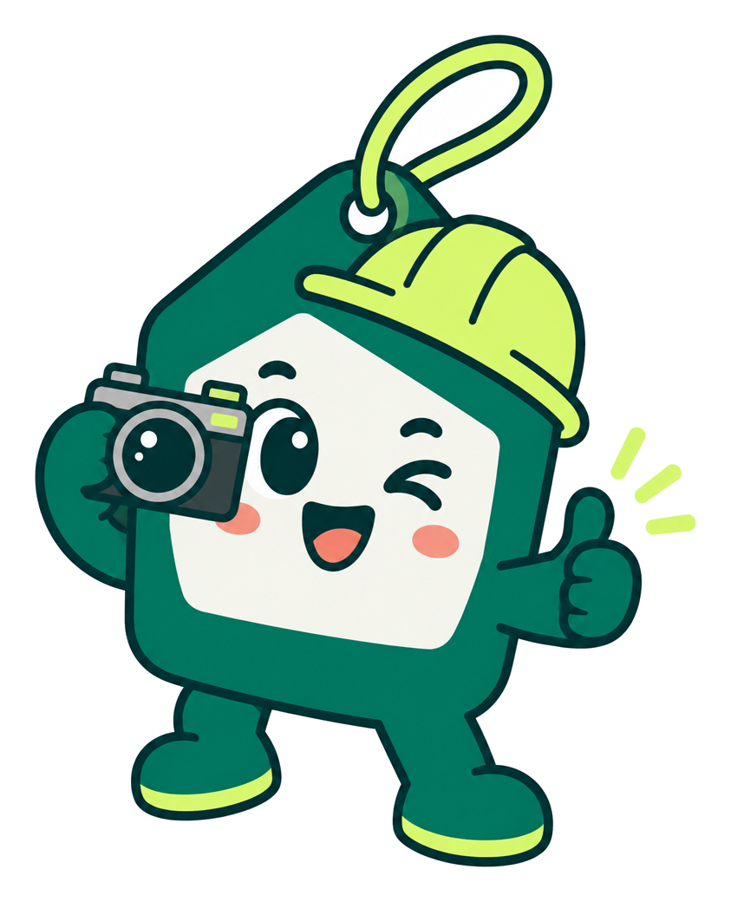
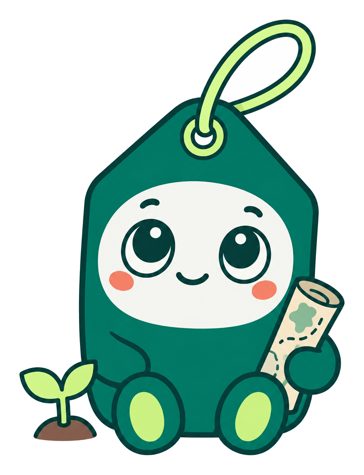

SVG 벡터화 품질 비교

default: PNG(좌) / SVG(우)

confirmed: PNG(좌) / SVG(우)

check: PNG(좌) / SVG(우)

field: PNG(좌) / SVG(우)

waiting: PNG(좌) / SVG(우)
32px 실루엣(SVG)
녹색 배경
 confirmed: PNG(좌) / SVG(우)
confirmed: PNG(좌) / SVG(우) waiting: PNG(좌) / SVG(우)
waiting: PNG(좌) / SVG(우)